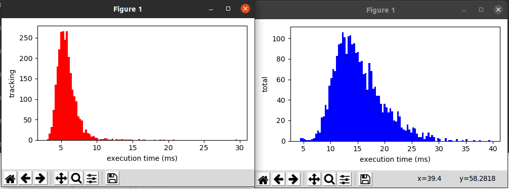

Filter Timing Analysis
Contents
Collection
To profile the different parts of the system we record the timing information from directly inside the ov_msckf::
To evaluate the computational load (not computation time), we have a python script that leverages the psutil python package to record percent CPU and memory consumption. This can be included as an additional node in the launch file which only needs the node which you want the reported information of. This will poll the node for its percent memory, percent cpu, and total number of threads that it uses. This can be useful if you wish to compare different methods on the same platform, but doesn't make sense to use this to compare the running of the same algorithm or different algorithms across different hardware devices.
<node name="recorder_timing" pkg="ov_eval" type="pid_ros.py" output="screen"> <param name="nodes" type="str" value="/run_subscribe_msckf" /> <param name="output" type="str" value="/tmp/psutil_log.txt" /> </node>
It is also important to note that if the estimator has multiple nodes, you can subscribe to them all by specifying their names as a comma separated string. For example to evaluate the computation needed for VINS-Mono multi-node system we can do:
<node name="recorder_timing" pkg="ov_eval" type="pid_ros.py" output="screen"> <param name="nodes" type="str" value="/feature_tracker,/vins_estimator,/pose_graph" /> <param name="output" type="str" value="/tmp/psutil_log.txt" /> </node>
Processing & Plotting
Script "timing_flamegraph"
The flame graph script looks to recreate a FlameGraph of the key components of the system. While we do not trace all functions, the key "top level" function times are recorded to file to allow for insight into what is taking the majority of the computation. The file should be comma separated format, with the first column being the timing, and the last column being the total time. The middle columns should describe how much each component takes (whose names are extracted from the header of the csv file).
rosrun ov_eval timing_flamegraph <file_times.txt> rosrun ov_eval timing_flamegraph timing_mono_ethV101.txt
Example output:
[TIME]: loaded 2817 timestamps from file (7 categories)!! mean_time = 0.0037 | std = 0.0011 | 99th = 0.0063 | max = 0.0254 (tracking) mean_time = 0.0004 | std = 0.0001 | 99th = 0.0006 | max = 0.0014 ( propagation) mean_time = 0.0032 | std = 0.0022 | 99th = 0.0083 | max = 0.0309 (msckf update) mean_time = 0.0034 | std = 0.0013 | 99th = 0.0063 | max = 0.0099 (slam update) mean_time = 0.0012 | std = 0.0017 | 99th = 0.0052 | max = 0.0141 (slam delayed) mean_time = 0.0009 | std = 0.0003 | 99th = 0.0015 | max = 0.0027 (marginalization) mean_time = 0.0128 | std = 0.0035 | 99th = 0.0208 | max = 0.0403 (total)

Script "timing_histogram"
Generates a histogram plot of binned execution times for a specific class. This allows for inspection of the distribution of times as compared to just the mean of it. The file should be comma separated format, with the first column being the timing, and the last column being the total time. The middle columns should describe how much each component takes (whose names are extracted from the header of the csv file).
rosrun ov_eval timing_histogram <file_times.txt> <num_bins> rosrun ov_eval timing_histogram timing_mono_ethV101.txt 75
Script "timing_comparison"
This script is use to compare the run-time of different runs of the algorithm. This take in the same file as the flame graph and is recorded in the ov_msckf::
rosrun ov_eval timing_comparison <file_times1.txt> ... <file_timesN.txt> rosrun ov_eval timing_comparison timing_mono_ethV101.txt timing_stereo_ethV101.txt
Example output:
====================================== [TIME]: loading data for timing_mono [TIME]: loaded 2817 timestamps from file (7 categories)!! mean_time = 0.0037 | std = 0.0011 | 99th = 0.0063 | max = 0.0254 (tracking) mean_time = 0.0004 | std = 0.0001 | 99th = 0.0006 | max = 0.0014 (propagation) mean_time = 0.0032 | std = 0.0022 | 99th = 0.0083 | max = 0.0309 (msckf update) mean_time = 0.0034 | std = 0.0013 | 99th = 0.0063 | max = 0.0099 (slam update) mean_time = 0.0012 | std = 0.0017 | 99th = 0.0052 | max = 0.0141 (slam delayed) mean_time = 0.0009 | std = 0.0003 | 99th = 0.0015 | max = 0.0027 (marginalization) mean_time = 0.0128 | std = 0.0035 | 99th = 0.0208 | max = 0.0403 (total) ====================================== ====================================== [TIME]: loading data for timing_stereo [TIME]: loaded 2817 timestamps from file (7 categories)!! mean_time = 0.0077 | std = 0.0020 | 99th = 0.0124 | max = 0.0219 (tracking) mean_time = 0.0004 | std = 0.0001 | 99th = 0.0007 | max = 0.0023 (propagation) mean_time = 0.0081 | std = 0.0047 | 99th = 0.0189 | max = 0.0900 (msckf update) mean_time = 0.0063 | std = 0.0023 | 99th = 0.0117 | max = 0.0151 (slam update) mean_time = 0.0020 | std = 0.0026 | 99th = 0.0079 | max = 0.0205 (slam delayed) mean_time = 0.0019 | std = 0.0005 | 99th = 0.0031 | max = 0.0052 (marginalization) mean_time = 0.0263 | std = 0.0063 | 99th = 0.0410 | max = 0.0979 (total) ======================================

Script "timing_percentages"
This utility allows for comparing the resources used by the algorithm on a specific platform. An example usage would be how the memory and cpu requirements increase as the state size grows or as more cameras are added. You will need to record the format using the pid_ros.py node (see Collection for details on how to use it). Remember that 100% cpu usage means that it takes one cpu thread to support the system, while 200% means it takes two cpu threads to support the system (see this link for an explanation). The folder structure needed is as follows:
psutil_logs/
ov_mono/
run1.txt
run2.txt
run3.txt
ov_stereo/
run1.txt
run2.txt
run3.txtrosrun ov_eval timing_percentages <timings_folder> rosrun ov_eval timing_percentages psutil_logs/
Example output:
====================================== [COMP]: processing ov_mono algorithm loaded 149 timestamps from file!! PREC: mean_cpu = 83.858 +- 17.130 PREC: mean_mem = 0.266 +- 0.019 THR: mean_threads = 12.893 +- 0.924 ====================================== ====================================== [COMP]: processing ov_stereo algorithm loaded 148 timestamps from file!! PREC: mean_cpu = 111.007 +- 16.519 PREC: mean_mem = 5.139 +- 2.889 THR: mean_threads = 12.905 +- 0.943 ======================================